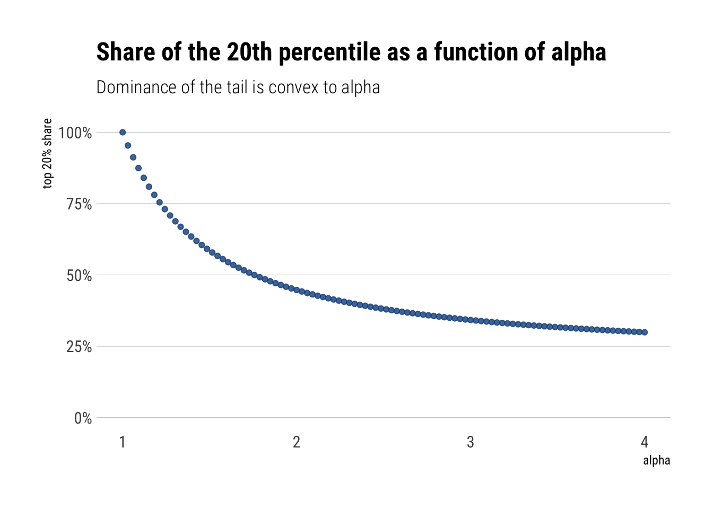
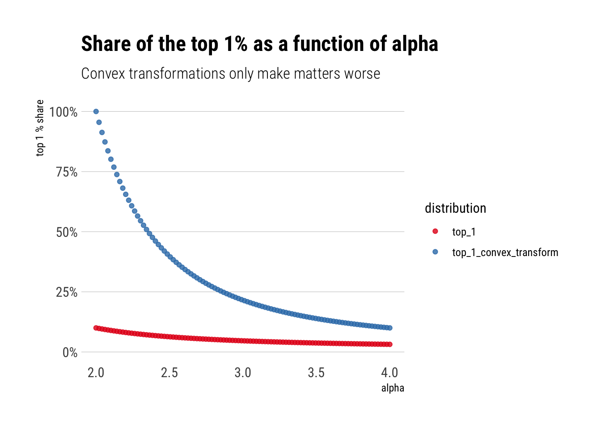
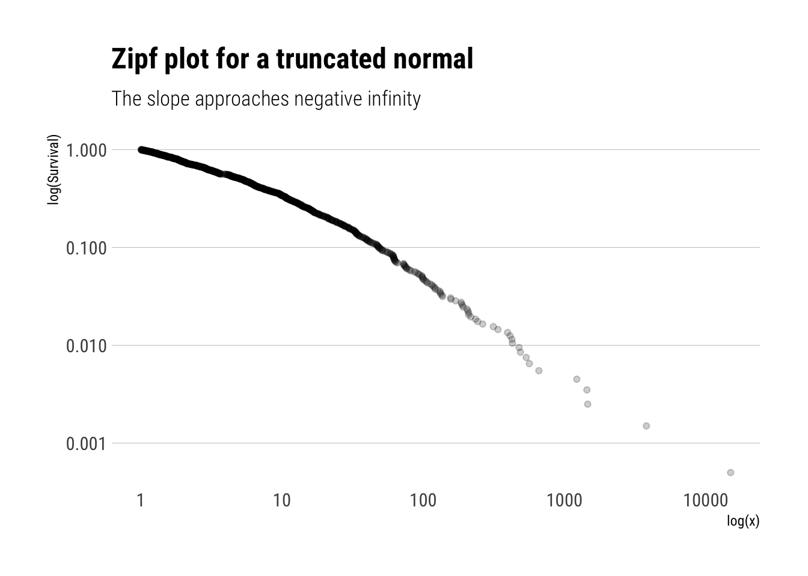
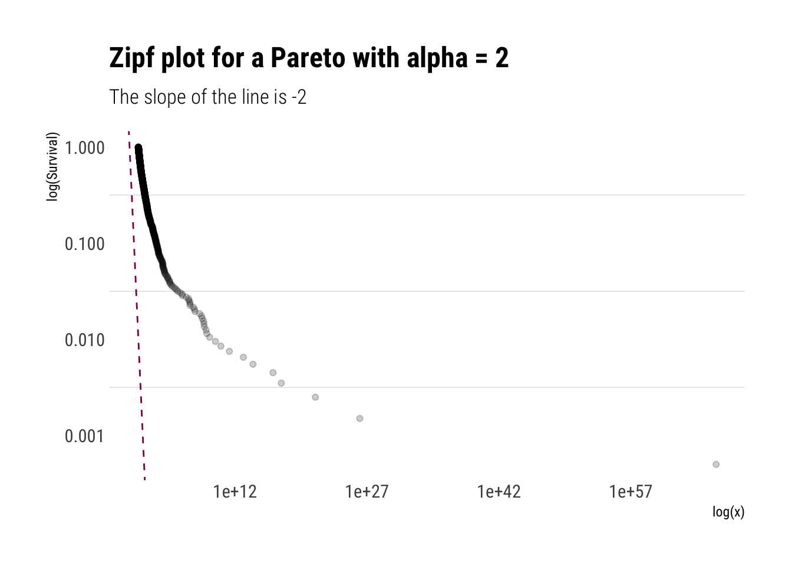
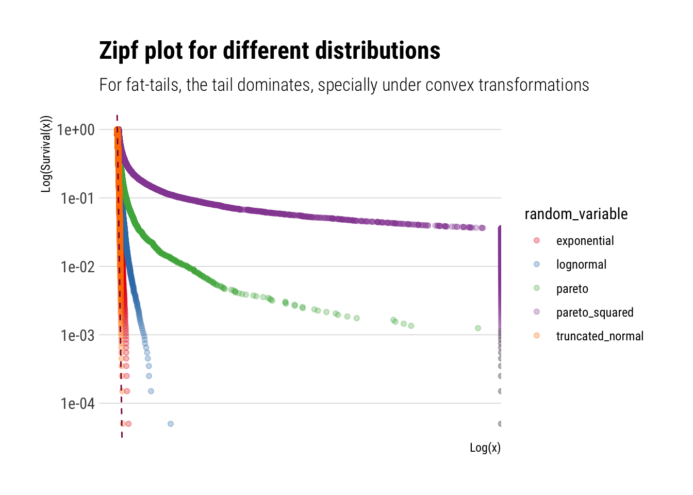
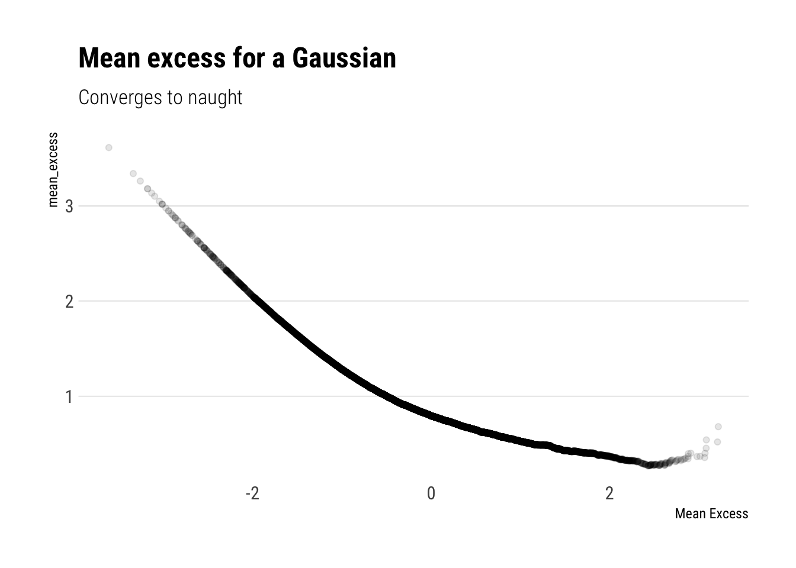
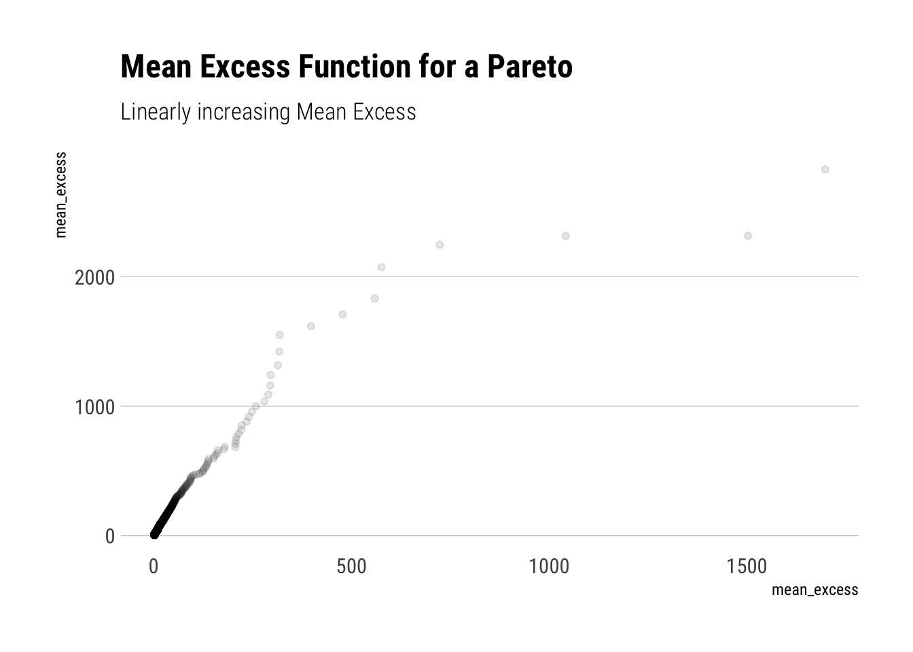
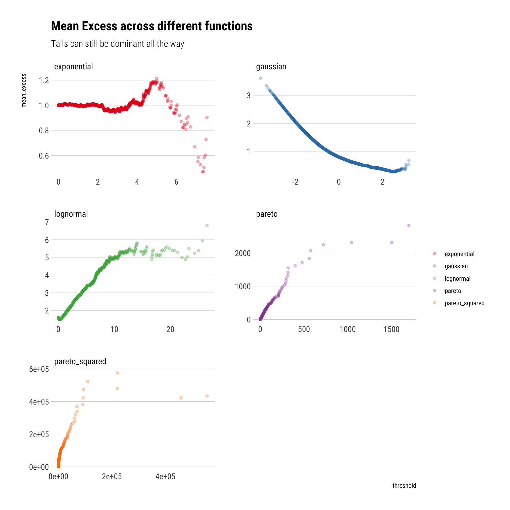

Power Laws are ubiquitous to describe fat tails, a topic that I’ve been trying to wrap my head around for the last couple of weeks. However, up until now, I haven’t had a visceral understanding of what exactly is the function of their main parameter: the tail exponent \(\alpha\). This blogpost is my attempt at gaining understanding. To do so, I will be replicating some of the plots and derivations from two sources:
To understand how sensitive the dominance of the tail event is to the \(\alpha\) and how convex transformations influence this association.
To understand how can we “see” the \(\alpha\) in data.
A mathematical definition
First, let’s be clear about what what are Power Laws: the random variables such that their survival function (\(S(x) = 1 - P(X>x)\)) can be described thus:
\[ S(x) \approx \dfrac{1}{x^{\alpha}}\] That is, the lower the value of \(\alpha\), the larger the survival function for any value of \(x\) and thus the tail will take more time to decay. Therefore, the lower the \(\alpha\), the fatter the tail. Indeed, the survival function is convex to the value of \(\alpha\).
The 80/20 rule
To gain perspective on what this means, Taleb has a clever trick to check the probability concentration effects. Thus, the share of the \(p\)th quantile for a given tail is:
\[ p^{\dfrac{\alpha-1}{\alpha}}\]
Thus, if what we are modelling is wealth, for \(p=0.2\), we are modelling what percentage of the wealth is owned by the top 20%. Let’s plot this as a function of \(\alpha\):
alpha =seq(1, 4, length.out =100)p =0.2top_20 <- p^((alpha-1)/alpha)tibble(top_20, alpha) %>%ggplot(aes(alpha, top_20)) +geom_point(alpha =0.8, color ="dodgerblue4") +expand_limits(y =0) +labs(title ="Share of the 20th percentile as a function of alpha",subtitle ="Dominance of the tail is convex to alpha",y ="top 20% share") + hrbrthemes::theme_ipsum_rc(grid ="Y") +scale_y_continuous(labels = scales::percent_format())

That is, we can see that the degree of dominance by the tail events is convex to the value of \(\alpha\). Thus, the larger the \(alpha\), the fatter the tail, and the larger dominance of the phenomena by the tail events.
Perhap’s even more worringly, this behavior is exacerbated by convex transformations to the original random variable. For example, if we instead are interested in the square of the wealth to compute the variance, this square of the wealth is going to be even more dominated by the tail-events. In fact, if \(X\) has tail exponent \(\alpha\), \(X^2\) has tail exponent \(\alpha/2\)
Let’s plot the share of the top 1% percent
alpha =seq(2, 4, length.out =100)alpha_wealth_squared <- alpha/2p =0.01top_1_convex_transform <- p^((alpha_wealth_squared-1)/alpha_wealth_squared)top_1 <- p^((alpha-1)/alpha)tibble(top_1, alpha, top_1_convex_transform) %>%pivot_longer(-alpha, names_to ="distribution", values_to ="top_1_share") %>%ggplot(aes(alpha, top_1_share, color = distribution)) +geom_point(alpha =0.8) +expand_limits(y =0) +labs(title ="Share of the top 1% as a function of alpha",subtitle ="Convex transformations only make matters worse",y ="top 1 % share") + hrbrthemes::theme_ipsum_rc(grid ="Y") +scale_y_continuous(labels = scales::percent_format()) +scale_color_brewer(palette ="Set1")

In conclusion, the contribution of the tails is convex to the alpha. Convex transformations of the original random variable only heighten this contribution
Scale-free Distribution
There’s a fundamental difference between the Pareto and the thin-tails. The survival function “works” in the same way independently from where we are in the tails. Whereas for the thin-tailed, the behavior is very location dependent. Thus, the Pareto is a scalable distribution, whereas the thin-tailed is non-scalable.
Non-scalable: Mediocristan
Intuitively, when we are considering thin-tailed distributions, the rate of decay of the tails is constantly decreasing. For example, take the Survival function of the Gaussian. The farther we go from the mean, the larger the difference between \(S(k)\) and \(S(2k)\). That is, the ratio \(\dfrac{S(k)}{S(2k)}\) increases as \(k\) grows larger.
The ratio’s growth is astounding. In a very real sense, the difference between the \(S(k)\) and \(S(2k)\) depends on where we are on the distribution. Also, realize that the numerator of the slope of the log of the survival function is approximately the inverse of this ratio
\[ \dfrac{\Delta log(S(x))}{\Delta log(x)} \approx \dfrac{log(S(2x)) - log(S(x))}{\Delta log(x)} = \dfrac{log(\dfrac{S(2x)}{S(x)})}{\Delta log(x)}\] Therefore, as \(\lim_{x \to \infty } \dfrac{S(2x)}{S(x)} = 0\) for the gaussian (and faster than the logarithm), the slope of the log of the Survival function goes towards negative infinity (\(\lim_{z \to 0} log (z) = -\infty\)) as we move away from the mean. Indeed, a common plot in the study of fat-tailed distributions is this plot precisely: log of the survival function vs log(x). It is called a zipf plot.
To incorporate this kind of plot in the ggplot2 workflow, I implemented a small package called ggtails:
library(ggtails)
Let’s simulate from a truncated normal and check that the slope of the log of the Survival function goes towards negative infinity:
rtruncnorm <-function(N, mean =0, sd =1, a =0, b =Inf) {# truncnormal with inverse transform samplingif (a > b) stop('Error: Truncation range is empty') U <-runif(N, pnorm(a, mean, sd), pnorm(b, mean, sd))qnorm(U, mean, sd)}truncated_normal <-rtruncnorm(1000)tibble(truncated_normal) %>%ggplot(aes(sample = truncated_normal)) +stat_zipf(alpha =0.2) +scale_y_log10() +scale_x_log10() + hrbrthemes::theme_ipsum_rc(grid ="Y") +labs(title ="Zipf plot for a truncated normal",x ="log(x)",y ="log(Survival)",subtitle ="The slope approaches negative infinity")

Indeed, the slope of the log of the survival function approaches negative infinity. That is, the behaviour of the Survival function depends on where we are: every time we move away from the mean, the Survival function decreases more and more. In a sense, our knowledge of the tail is not scalable, it changes radically as we move in the tail.
Scalable: Extremistan
Let’s replicate our analysis of the scalability of our knowledge of the Survival function with a Pareto with \(\alpha = 2\). That is, let’s compare the ratio \(\dfrac{S(k)}{S(2k)\) as \(k\) grows larger.
Surprisingly, the change of the Survival function does not depend on where we are on the distribution. Indeed, our knowledge of the tail is scalable:
\[ S(k) = 4 S(2k)\]
In fact, this is a general property of the Pareto distributions.
Remember that with the Gaussian, the slope of the log of the Survival function approaches negative infinity. With the result above, we can see that the slope of the Pareto will be constant. Thus:
That is, the slope of the log of the Survival is constant and is the negative of the tail exponent. Let’s plot the Zipf plot for the Pareto:
pareto_samples <- (1/runif(1000)^(1/2)) #inverse transform samplingtibble(pareto_samples) %>%ggplot(aes(sample = pareto_samples)) +stat_zipf(alpha =0.2) +geom_abline(slope =-2, linetype =2, color ="deeppink4") +scale_y_log10() +scale_x_log10() + hrbrthemes::theme_ipsum_rc(grid ="y") +labs(title ="Zipf plot for a Pareto with alpha = 2",x ="log(x)",y ="log(Survival)",subtitle ="The slope of the line is -2")

To conclude, the \(\alpha\) can be understood as an approximation the slope of Survival Function. The lower the alpha, the more slowly the Survival function decays and thus the fatter the tail
Therefore, thin tails can be understood as having an \(\alpha = +\infty\). To better understand what this entails, let’s plot a Zipfplot for samples from different distributions:
truncated_normal <-rtruncnorm(10000)lognormal <-rlnorm(10000)exponential <-rexp(10000)pareto <-1/(runif(10000))^(1/1.16) # inverse transform samplingpareto_squared <-1/(runif(10000))^(1/0.58)tibble(sim =1:10000, truncated_normal, lognormal, exponential, pareto, pareto_squared) %>%pivot_longer(-sim, names_to ="random_variable", values_to ="value") %>%ggplot(aes(sample = value, color = random_variable)) +stat_zipf(alpha =0.3) +geom_abline(slope =-1.16, linetype =2, color ="deeppink4") +scale_x_log10() +scale_y_log10() + hrbrthemes::theme_ipsum_rc(grid ="Y") +labs(title ="Zipf plot for different distributions",subtitle ="For fat-tails, the tail dominates, specially under convex transformations",x ="Log(x)",y ="Log(Survival(x))") +scale_color_brewer(palette ="Set1")

Therefore, we can we see how quickly different distributions decay. Whereas the Pareto keeps decaying at a constant pace. This is what makes its tails so dangerous, specially under convex transformations.
Mean Excess plots
To finally hone this point home, we can check the mean excess. For a given threshold \(v\), the Mean Excess for a random variable \(X\) is:
\[ E[X - v | X > v] \]
This is just a weighted sum. Even though the average term keeps increasing as we increase the threshold \(v\), for a gaussian the weights decrease so much that the Mean Excess decreases as we increase \(v\).
gaussian <-rnorm(10000)tibble(gaussian) %>%ggplot(aes(sample = gaussian)) +stat_mean_excess(alpha =0.1) + hrbrthemes::theme_ipsum_rc(grid ="Y") +labs(title ="Mean excess for a Gaussian",subtitle ="Converges to naught",x ="Mean Excess")

Whereas for a Pareto r.v., the weighted sum increases. Although the weights decrease, they do not decrease fast enough to counteract the increasing average term that we are summing over. In fact, for a Pareto, the mean excess will be linearly increasing and its slope will have a negative derivative with respect to \(\alpha\).
pareto <-1/(runif(10000))^(1/1.16) # inverse transform samplingtibble(pareto) %>%ggplot(aes(sample = pareto)) +stat_mean_excess(alpha =0.1) + hrbrthemes::theme_ipsum_rc(grid ="Y") +labs(title ="Mean Excess Function for a Pareto",subtitle ="Linearly increasing Mean Excess",x ="mean_excess")

Finally, a comparison of the mean excess across functions can really help us to digest what is the big difference between fat-tails and other distributions:
tibble(sim =1:10000, gaussian, lognormal, exponential, pareto, pareto_squared) %>%pivot_longer(-sim, names_to ="random_variable", values_to ="value") %>%ggplot(aes(sample = value)) +stat_mean_excess(aes(color = random_variable),alpha =0.3) +facet_wrap(~random_variable, scales ="free", nrow =3) + hrbrthemes::theme_ipsum_rc(grid ="Y") +labs(title ="Mean Excess across different functions",color ="",subtitle ="Tails can still be dominant all the way") +scale_color_brewer(palette ="Set1")

Conclusion
The tail exponent determines how large the tails’ influence will be. If we look at share of the phenomenon by a small top of observations, like we did, this influence will only grow with convex trasnformations of the data. We also saw how we can “see” the \(\alpha\). It determines the slope of the tail in a Zipf plot and in the Mean Excess.